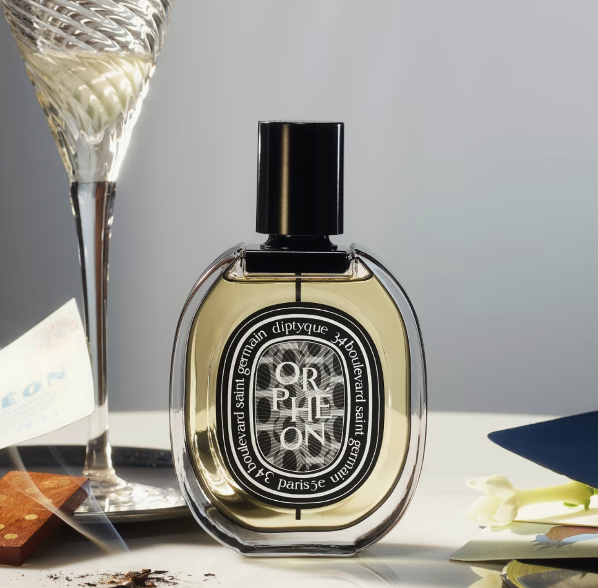
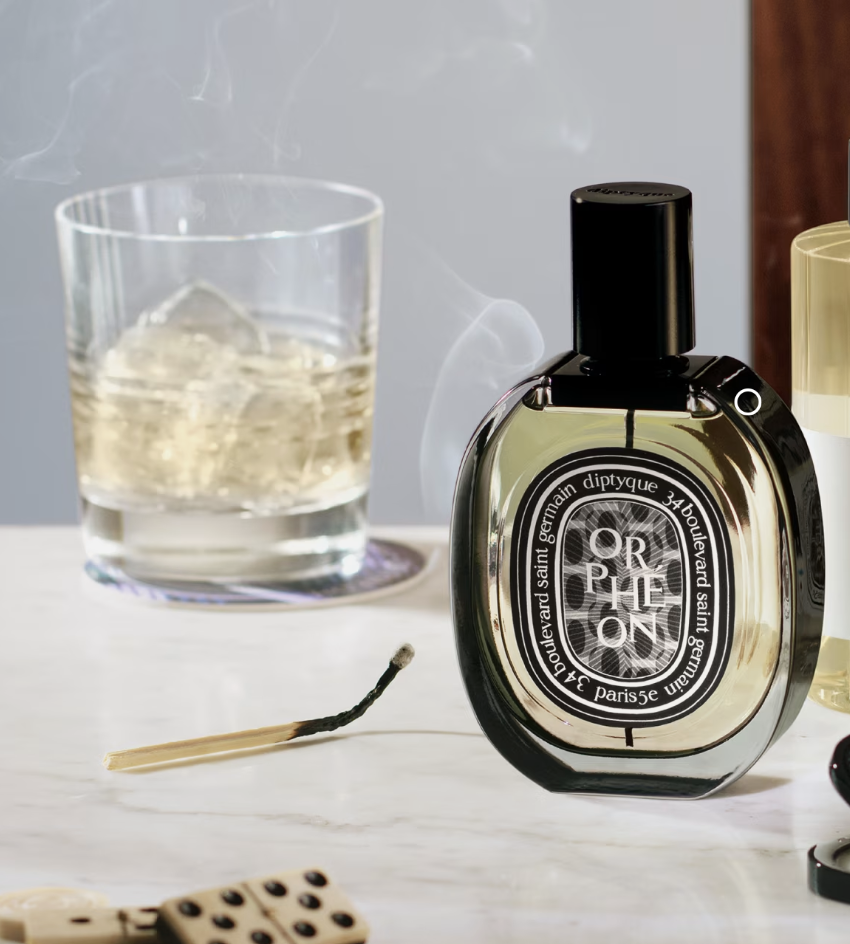

Hover this to see the vedio!
ORPHÉON
Eau de parfum
Paris in the early 60s. The Saint-Germain quarter was alive with the rhythm of all-night sessions in jazz clubs and artistic encounters.
People would discuss the world, dance and laugh in a warm atmosphere as vibrant as it was elegant... Orphéon was one of the bars, filled with joyful effervescence, where the three founders of the nearby Diptyque boutique liked to meet.
Today, paying tribute to this era and to creative friendships, the bar is immortalised in the olfactory portrait that bears its name: Orphéon.
Freeze frame: plumes of tobacco smoke mingle with powdery trails of blusher, lingering on burnished wood.
At the heart of the composition is the atmosphere of that unforgettable place, recognisable through the warmth of the tonka bean, the depth of cedar and the vivacity of juniper berries.
Open the door, you’re at the Orphéon. Step right in
Today, all that remains of Orphéon is a faceted blue column in the back of the boutique at 34 Boulevard Saint Germain.
Ingredients
alcohol denat. (sd alcohol 40-b) - parfum (fragrance) - aqua (water) - benzyl salicylate - limonene - linalool - alpha-isomethyl ionone - hydroxycitronellal - geraniol - citronellol - coumarin - benzoic acid - citral - benzyl benzoate - benzyl alcohol – cinnamal - methyl benzoate - hexyl cinnamal - isoeugenol. vol. 77°

